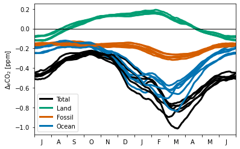
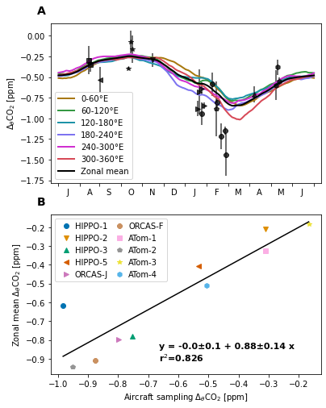

Aircraft sampling representativeness¶
%load_ext autoreload
%autoreload 2
import warnings
import numpy as np
import statsmodels.api as sm
import matplotlib.pyplot as plt
import matplotlib.colors as colors
import emergent_constraint as ec
import figure_panels
import models
import obs_aircraft
import util
Load model data¶
model_list = ['CT2019B']
model_objs = {}
for name in model_list:
model_objs[name] = models.Model(name)
model_objs
{'CT2019B': <models.core.Model at 0x2b89276a4b90>}
dsets_theta_bins = {}
for model in model_list:
ds = model_objs[model].open_derived_dataset(
'molefractions_theta_bins',
kwargs_name='SO-10K-bins-300K_275K',
lat_bounds=(-80., -45.),
theta_bins=[(295., 305.), (270., 280.),],
)
dsets_theta_bins[model] = ds.sel(time=slice('2009', '2020')).compute()
dsets_theta_bins
assuming cache is correct
reading cached file: /glade/u/home/mclong/codes/so-co2-airborne-obs/so-co2-airborne-obs/models/data-cache/CT2019B/molefractions_theta_bins.SO-10K-bins-300K_275K.nc
{'CT2019B': <xarray.Dataset>
Dimensions: (time: 3652, theta_bins: 2, d2: 2)
Coordinates:
* time (time) datetime64[ns] 2009-01-01T12:00:00 ... 2018-12-...
* theta_bins (theta_bins) float64 300.0 275.0
theta_bins_bounds (theta_bins, d2) float64 295.0 305.0 270.0 280.0
Dimensions without coordinates: d2
Data variables:
CO2 (time, theta_bins) float32 383.7 383.5 ... 406.2 405.9
Z3 (time, theta_bins) float32 4.937e+03 669.0 ... 807.7
P (time, theta_bins) float32 5.344e+04 ... 8.992e+04
T (time, theta_bins) float32 249.3 268.7 ... 245.7 267.5
theta (time, theta_bins) float32 299.8 275.8 ... 299.8 276.2
CO2_OCN (time, theta_bins) float32 -10.24 -10.45 ... -26.17
CO2_LND (time, theta_bins) float32 -5.733 -5.565 ... -12.81
CO2_FFF (time, theta_bins) float32 31.47 31.31 ... 76.79 76.64
area (time, theta_bins) float64 1.375e+11 ... 1.264e+11}
dsets_theta_bins_lon = {}
for model in model_list:
ds = model_objs[model].open_derived_dataset(
'molefractions_theta_bins_sectors',
kwargs_name='SO-10K-bins-300K_275K',
lat_bounds=(-80., -45.),
theta_bins=[(295., 305.), (270., 280.),],
)
for v in ds.data_vars:
if 'time' in ds[v].dims:
newdims = ['time'] + [d for d in ds[v].dims if d != 'time']
ds[v] = ds[v].transpose(*newdims)
dsets_theta_bins_lon[model] = ds.sel(time=slice('2009', '2020')).compute()
dsets_theta_bins_lon
assuming cache is correct
reading cached file: /glade/u/home/mclong/codes/so-co2-airborne-obs/so-co2-airborne-obs/models/data-cache/CT2019B/molefractions_theta_bins_sectors.SO-10K-bins-300K_275K.nc
{'CT2019B': <xarray.Dataset>
Dimensions: (lon_bins: 6, time: 3652, theta_bins: 2, d2: 2)
Coordinates:
* lon_bins (lon_bins) float64 30.0 90.0 150.0 210.0 270.0 330.0
* time (time) datetime64[ns] 2009-01-01T12:00:00 ... 2018...
* theta_bins (theta_bins) float64 300.0 275.0
theta_bins_bounds (theta_bins, d2) float64 295.0 305.0 270.0 280.0
Dimensions without coordinates: d2
Data variables:
CO2 (time, lon_bins, theta_bins) float32 383.7 ... 405.8
Z3 (time, lon_bins, theta_bins) float32 4.523e+03 ......
P (time, lon_bins, theta_bins) float32 5.674e+04 ......
T (time, lon_bins, theta_bins) float32 254.0 ... 269.1
theta (time, lon_bins, theta_bins) float32 299.9 ... 275.2
CO2_OCN (time, lon_bins, theta_bins) float32 -10.19 ... -2...
CO2_LND (time, lon_bins, theta_bins) float32 -5.83 ... -12.85
CO2_FFF (time, lon_bins, theta_bins) float32 31.53 ... 76.65
area (time, lon_bins, theta_bins) float64 1.331e+11 ......
coord_lon_bins_bounds (lon_bins, d2) float64 0.0 60.0 60.0 ... 300.0 360.0}
Compute a smoothed daily-climatology¶
window = 30
dsets_theta_diff_clm = {}
dsets_theta_diff_lon_clm = {}
for model in model_list:
with warnings.catch_warnings():
warnings.simplefilter("ignore", category=RuntimeWarning)
dsets_theta_diff_clm[model] = util.mavg_periodic_ds(
util.daily_climatology(dsets_theta_bins[model]).diff('theta_bins'),
window,
)
dsets_theta_diff_lon_clm[model] = util.mavg_periodic_ds(
util.daily_climatology(dsets_theta_bins_lon[model]).diff('theta_bins'),
window,
)
dsets_theta_diff_clm
skipping leap days
skipping leap days
{'CT2019B': <xarray.Dataset>
Dimensions: (theta_bins: 1, time: 365, d2: 2)
Coordinates:
* theta_bins (theta_bins) float64 275.0
* time (time) int64 1 2 3 4 5 6 7 ... 360 361 362 363 364 365
Dimensions without coordinates: d2
Data variables:
theta_bins_bounds (theta_bins, d2) float64 -25.0 -25.0
CO2 (time, theta_bins) float64 -0.5201 -0.5233 ... -0.5165
Z3 (time, theta_bins) float64 -4.4e+03 ... -4.406e+03
P (time, theta_bins) float64 3.876e+04 ... 3.88e+04
T (time, theta_bins) float64 21.03 20.98 ... 21.15 21.09
theta (time, theta_bins) float64 -23.77 -23.76 ... -23.77
CO2_OCN (time, theta_bins) float64 -0.4943 -0.4972 ... -0.4912
CO2_LND (time, theta_bins) float64 0.1532 0.1539 ... 0.1523
CO2_FFF (time, theta_bins) float64 -0.1792 -0.1804 ... -0.178
area (time, theta_bins) float64 -1.053e+10 ... -1.058e+10}
clobber = False
clobber_deep = False
constraint_type = 'ocean_constraint'
campaign_info = obs_aircraft.get_campaign_info(verbose=False)
model_input_lists = ec.get_model_tracer_lists(constraint_type)
obj = ec.whole_enchilada(clobber=clobber_deep, **model_input_lists)
ac = obj.get_ac(**ec.get_parameters('default'), clobber=clobber)
ac.theta_bins
((295.0, 305.0), (-inf, 280.0))
model = 'CT2019B'
figs, axs = util.canvas(1, 1)
for lon_bin in dsets_theta_diff_lon_clm[model].lon_bins.values:
figure_panels.vertical_gradient_seasonal(
dsets_theta_diff_lon_clm[model].sel(lon_bins=lon_bin),
axs[0, 0], #co2_var_list=['CO2'],
)

df_air_model_flts = ac.get_flight_gradients({model: obj.dfs_model[f'{model}-CO2']})
df_model_camp = ac.get_campaign_gradients({model: obj.dfs_model[f'{model}-CO2']})
campaign_info = obs_aircraft.get_campaign_info(verbose=False)
model = 'CT2019B'
ds_ΔθCO2 = dsets_theta_bins[model].diff('theta_bins')
ΔθCO2_za = {}
for campaign, info in campaign_info.items():
za_grad = (ds_ΔθCO2.CO2
.sel(time=slice(info['time_bound'][0], info['time_bound'][1]))
.mean('time')
)
ΔθCO2_za[campaign] = float(za_grad.values)
import cmocean
from matplotlib.colors import rgb2hex
color_lon = {}
bins = dsets_theta_diff_lon_clm[model].lon_bins.values
rgb = cmocean.tools.get_dict(cmocean.cm.phase, N=len(bins)+1)
for name, r, g, b in zip(bins, rgb['red'], rgb['green'], rgb['blue'], ):
color_lon[name] = rgb2hex([r[1], g[1], b[1]])
color_lon
{30.0: '#a8780d',
90.0: '#359943',
150.0: '#1e93a8',
210.0: '#7d73f0',
270.0: '#d02fd0',
330.0: '#d74957'}
Visualization¶
fig, axs = util.canvas(2, 1)
ax = axs[0, 0]
for lon_bin in dsets_theta_diff_lon_clm[model].lon_bins.values:
ds = dsets_theta_diff_lon_clm[model].sel(lon_bins=lon_bin)
bnds = ds.coord_lon_bins_bounds.values
x, y = util.antyear_daily(ds.time, ds.CO2)
h = ax.plot(x, y,
color=color_lon[lon_bin],
label=f'{bnds[0]:0.0f}-{bnds[1]:0.0f}°E',
linestyle='-',
linewidth=2
)
ds = dsets_theta_diff_clm[model]
x, y = util.antyear_daily(ds.time, ds.CO2)
h = ax.plot(x, y,
color='k',
label=f'Zonal mean',
linestyle='-',
linewidth=2
)
figure_panels.obs_theta_gradient(df_air_model_flts, ax, just_the_median=True, median_size=6)
ax.set_xlim((-10, 375))
ax.set_xticks(figure_panels.bomday)
ax.set_xticklabels([f' {m}' for m in figure_panels.monlabs_ant]+[''])
ax.set_ylabel('$\Delta_{ θ}$CO$_2$ [ppm]')
#ax.set_ylim(axs[0, 0].get_ylim())
ax.set_xlim((-10, 375))
ax.legend(loc='lower left');
ax = axs[1, 0]
marker_spec = figure_panels.marker_spec_campaigns()
X = []
Y = []
for c in campaign_info.keys():
x, y = df_model_camp.loc[c].gradient_mean, ΔθCO2_za[c]
ax.plot(x, y, **marker_spec[c], label=c, linestyle='None')
X.append(x); Y.append(y)
ax.legend(loc='upper left', ncol=2, columnspacing=0.4, handletextpad=0.1)
ols = sm.OLS(Y, sm.add_constant(X))
intercept, slope = ols.fit().params
stderr_intercept, stderr_slope = ols.fit().bse
r2 = ols.fit().rsquared
x = np.array([np.array(X).min(), np.array(X).max()])
ax.plot(x, x * slope + intercept, 'k-');
ax.set_ylabel('Zonal mean $\Delta_{ θ}$CO$_2$ [ppm]');
ax.set_xlabel('Aircraft sampling $\Delta_{ θ}$CO$_2$ [ppm]');
str_text = (
f'y = {intercept:0.1f}±{stderr_intercept:0.1f} + {slope:0.2f}±{stderr_slope:0.2f} x\n' +
f'r$^2$={r2:0.3f}'
)
xoff = -np.diff(ax.get_xlim()) * 0.6
yoff = np.diff(ax.get_ylim()) * 0.08
ax.text(
ax.get_xlim()[1]+xoff, ax.get_ylim()[0]+yoff,
str_text,
fontsize=11, fontweight='bold',
bbox=dict(facecolor='w', alpha=0.75, edgecolor='None', boxstyle='square,pad=0'),
);
util.label_plots(fig, [ax for ax in axs.ravel()])
util.savefig('seasonal-cycle-zonal-representativeness')
